Ako nainštalovať Windows 11
1. Vytvorenie inštalačného média
Začneme stiahnutím programu zo stránok microsoftu, ktorý vytvorí inštalačné médium. Program násladne otvoríme.
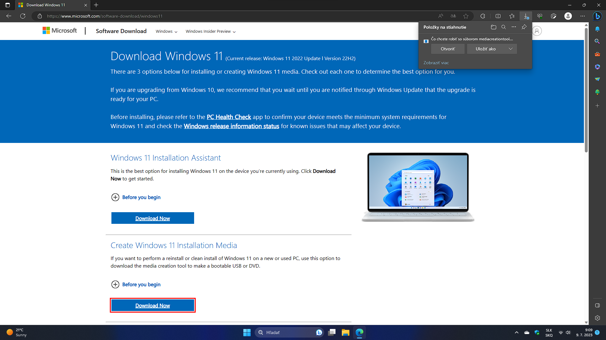Odsúhlasíme podmienky používania programu. (Samozrejme potom ako ich prečítame.)
Vyberieme edíciu. (Ak je všetko správne, môžme pokračovať.)
Pre vytvorenie inštalačného média na USB flash disk zvolíme možnosť "USB kľúč".
Teraz vyberieme na ktorom USB flash disku sa nám vytvorý inštalačné médium. UPOZORENIE Všetky predošlé súbory na USB flash disku budú zmazané.
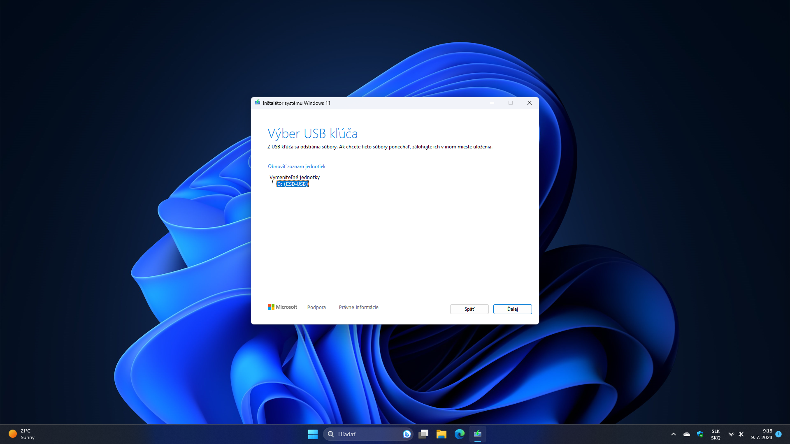Teraz počkáme kým sa stiahne a vytvorý inštalačné médium. Po dokončení môžme stlačiť tlačidlo "dokončiť" a program sa sám zavrie.
2. Inštalácia Windows 11
USB flash disk vložíme do PC na ktorom chceme Windows 11 nainštalovať a nabootujeme z daného USB kľúča.
Tech
tip: Ak sa nevieme v tomto kroku pohnúť stačí si vyhľadať na internete "How to boot from usb (značka
vašej základnej dosky)".
Teraz keď sme nabootovali s USB flash disku, uvidíme po chvíľke načítavania túto obrazovku. Ak je všetko správne stlačíme "Ďalej".
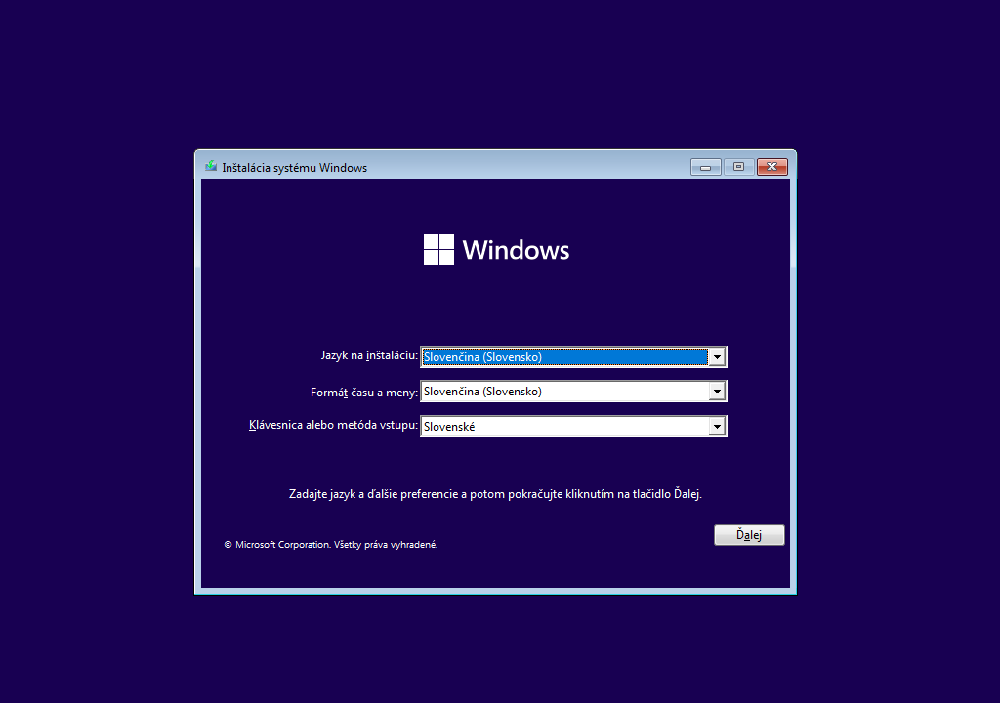Teraz môžme stlačiť "Inštalovať".
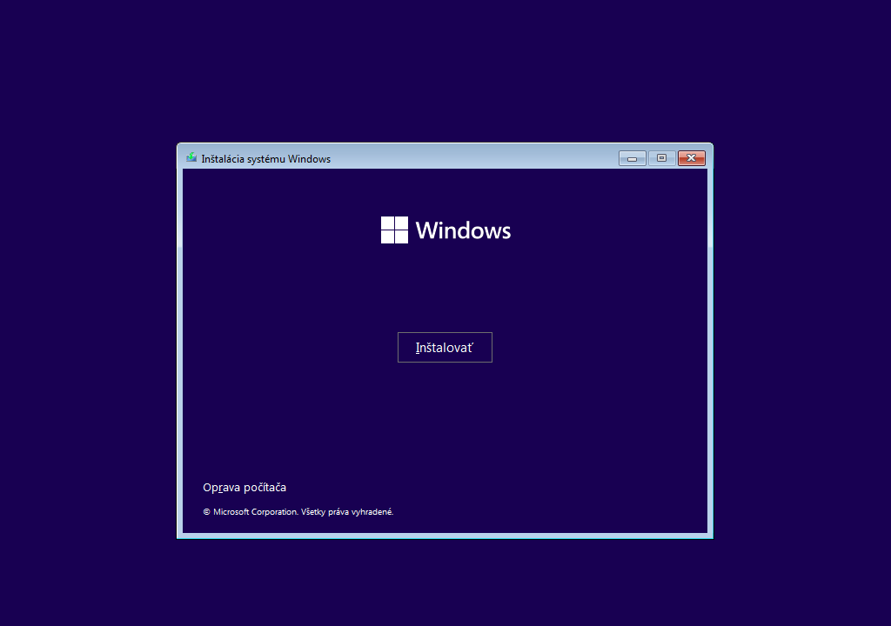Teraz vložíme náš kľúč pre aktiváciu Windowsu. Ak bol počítač v minulosti už aktivovaný a iba systém reinštalujete môžte stlačiť "Nemám kód Product Key"
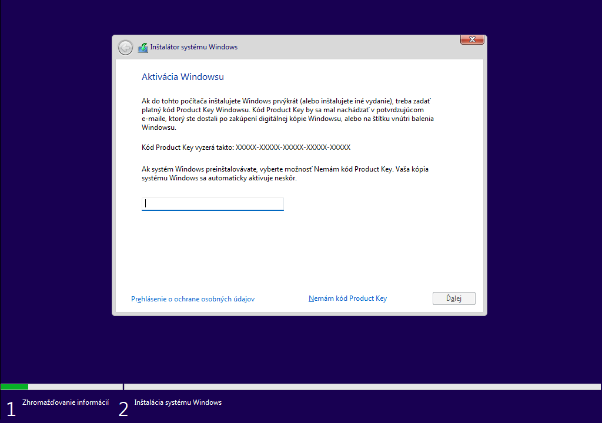Podľa toho pre akú edíciu bol kľúč ktorý sme v minulom kroku zadali teraz vyberieme edíciu na inštaláciu.
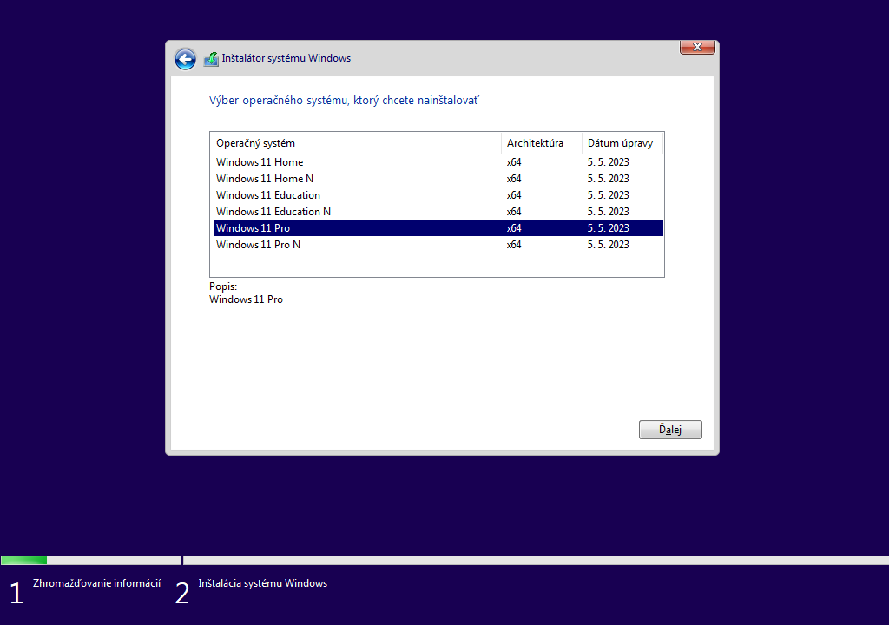Pre pokračovanie v inštalácii je nutné odsúhlasiť podmienky produktu. (A samozrejme si ich prečítať.)
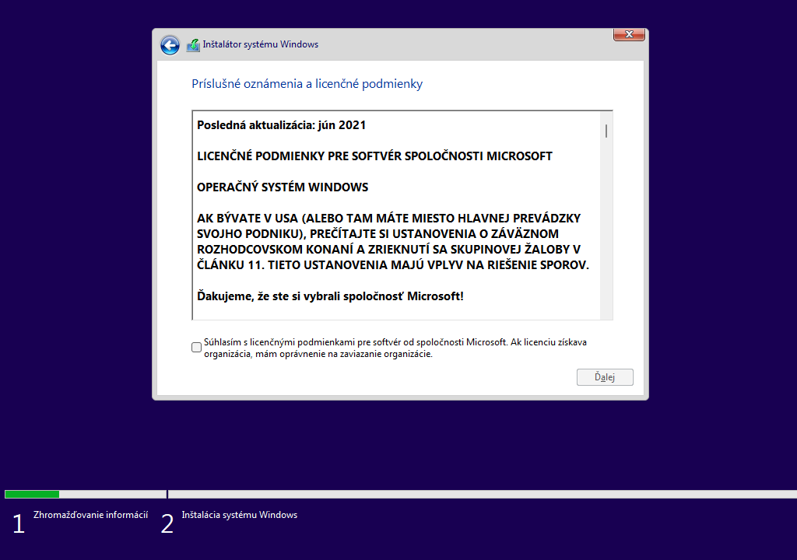V tomto kroku vyberieme "Vlastná inštalácia".
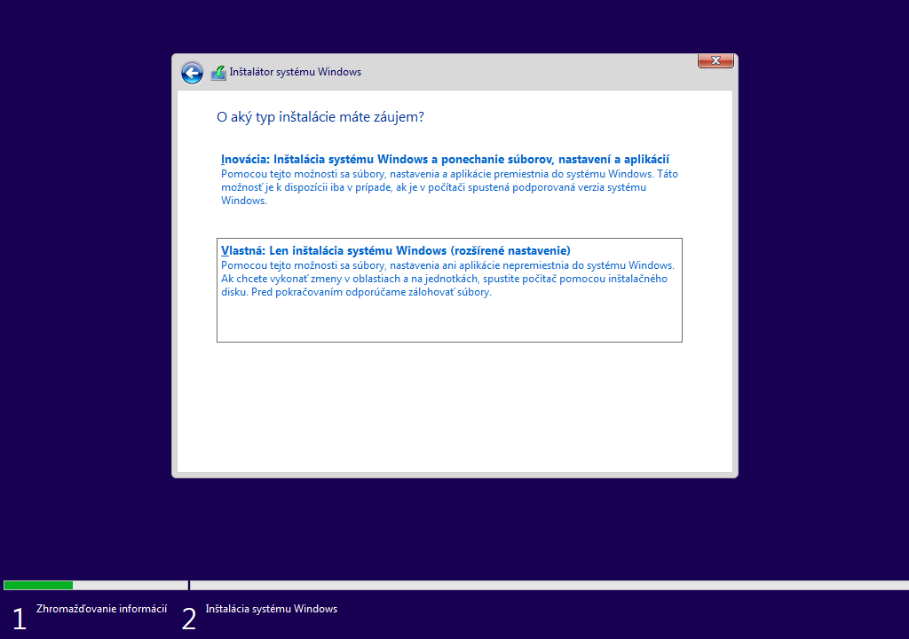Teraz je nutné vybrať disk na inštaláciu.Ak ich máme v PC viac vyberieme pre systém ten najrýchlejší. Ak PC reinštalujeme a ostali nám pôvodné oddiely, vyberieme ich a po jednom odstránime, aby to vypadalo ako na screenshote pod týmto textom (Ukážka inštalácie s jedným diskom už s zmazanými oddielami).Keď to máme takto pripravné môžme stlačiť "Ďalej".
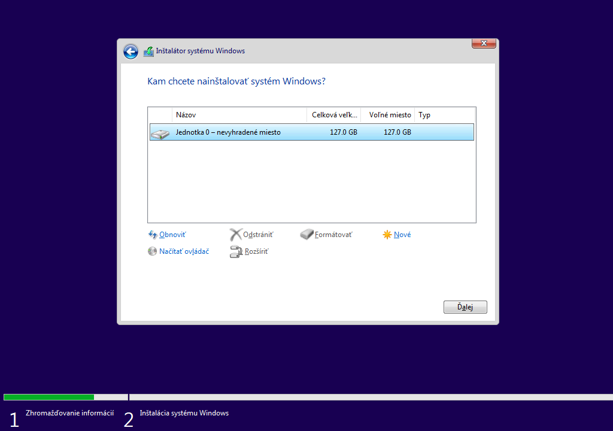V tomto momente prebehne inštalácia systému Windows 11.
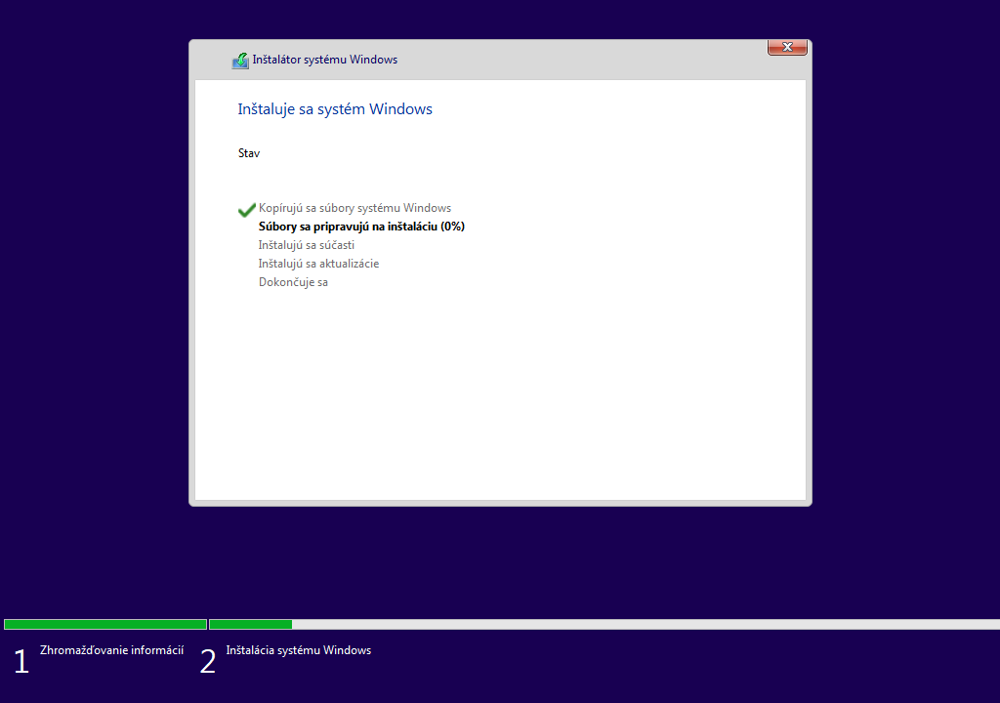Po inštalácii systému
Po úspešnej inštalácii sa vám zobrazí OOBE, tu si váš počítač môžte nastaviť podľa seba a prihlásiť sa s vašimi účtami, po dokončení tohto nastavenia možte systém používať.
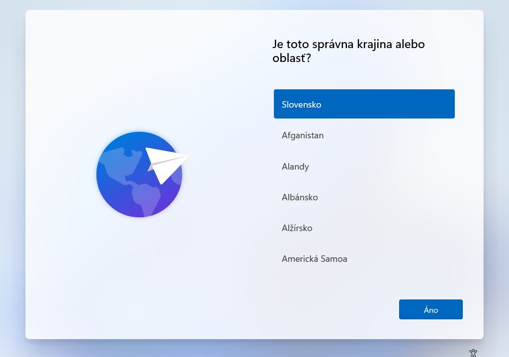